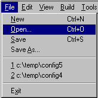

The Configuration Tool acts like other Windows applications, such as Word or Notepad, by employing a document-centric model. In the case of the Configuration Tool the data is saved to disk as a build-tree (rather than a single file); the tree is created when the data is first saved and header files within it updated as necessary to reflect changes you save. When the Configuration Tool is first invoked, no build-tree is associated with the displayed data: the document is the default repository (i.e. not yet saved to disk). Bearing this in mind, the usual operations are available: File->Save, File->Save As and the most recently used entries on the File menu item:

The configuration data is marked modified if any configurable item's value differs from its default. In such a case you will be prompted to save the document data before quitting the Configuration Tool.
The most recently used (MRU) document list records up to four most recently accessed build-trees.
All File menu items are grayed during the process of saving a configuration.
NOTE: A “document” in the Configuration Tool is a full build-tree, which means that the Save operation generates an entire build-tree.